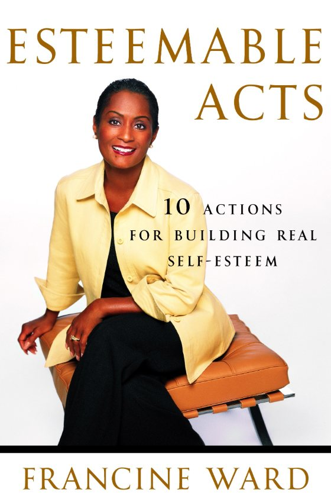
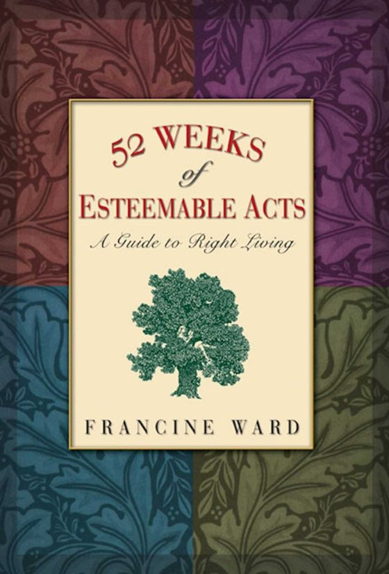

Esteemable Acts®
Self-esteem comes fromdoing esteemable acts.
Real self-esteem doesn’t come from quick fixes or slogans — it comes from action. It isn’t something you acquire. It’s something you practice into being.
The approach
A new way to think about self-esteem.
The Esteemable Acts® approach challenges the myth that all you need to do is stand in front of a mirror, chant affirmations, or complete a 7, 30, or 60-day program.
Instead, it teaches that real self-esteem comes from consistent, often uncomfortable, affirmative steps that align with the person you want to be. A professional speaker since 1995, Francine teaches what she has lived.
Believe it or not, your behavior determines your feelings about YOU! Francine D. Ward
The philosophy
Five core principles of Esteemable Acts.
Most self-help asks you to think differently and hope you’ll act differently. Esteemable Acts flips it: change what you do, and the way you see yourself follows.
It’s not a quick fix.
Self-esteem requires effort. The results you get depend directly on the work you’re willing to put in.
Self-esteem is not the same as confidence.
Confidence, success and outward assurance don’t guarantee that you like who you are. Many accomplished people still mistreat others or need to put others down to feel worthy.
Self-esteem is not the destination.
It’s the byproduct of living a courageous, purposeful, service-driven life — the lessons and growth along the way shape who you are and how you treat others.
Esteemable acts build self-esteem.
You can’t think your way into right living — you must act your way into right thinking. When your behavior reflects your values, you naturally feel better about yourself.
Courage grows self-esteem.
Every time you walk through fear, tackle a challenge, or complete a task you doubted you could handle, you reinforce your own worth.
Living proof
From the streets of New York to Georgetown Law.
These principles aren’t theory. They’re how Francine rebuilt her own life — and how she has stayed clean and sober for more than four decades.
Read her story →Practice
Ten esteemable acts to start with this week.
Not the book’s chapter list — ten actions Francine returns to again and again in her weekly reflections, each linked to the piece where she writes about it. Pick one. Do it today. Notice how you feel tonight.
Take action, one baby step at a time
Progress rarely comes in leaps. Break the task into small pieces, and remember that every action counts.
Read “One Baby Step at a Time” →Walk through your fear
Courage isn’t the absence of fear. It’s admitting you’re afraid — then taking the action to get through it.
Read “Walk Through Your Fear” →Have the courage to dream
Dreams give you a reason to get out of bed in the morning, and to keep going on the days you want to give up.
Read “Courage to Dream” →Risk failure
Failing is not the worst thing that can happen. Not trying is.
Read “Courage to Risk Failure” →Keep your agreements with yourself
Stay focused on the goal, and be willing to take the action despite how you feel.
Read “Focus is the Key” →See yourself clearly
Take a personal inventory. When feedback stings, ask whether what they say could be true.
Read “Personal Inventory” →Let go of victimhood
Make a decision to take back your life. Ask what part you played, and choose responsibility over blame.
Read “Let Go of Victimhood” →Don’t let obstacles take you down
Give yourself time, keep the end in mind, ask for help — and be open to a new route.
Read “Don’t Let Obstacles Take You Down” →Forgive
Clean up unresolved issues now, not someday. Forgiveness is the gift you give to you.
Read “Forgiveness: The Gift You Give to You” →Practice gratitude
Choose to see the good, say thank you every chance you get, and write a gratitude list every week.
Read “Attitude of Gratitude” →
Life Pillars
A life is built on pillars.
Ten areas Francine uses to set her goals each year. Each pillar affects the others, creating an interdependent web — when one is neglected, the whole structure feels it.
A pillar is simply a tall structure that provides support. My life pillars are the categories I use when I set my annual goals. They are the areas in my life that enable me to stay balanced—my life support.”
— Francine D. Ward, Life Pillars
Finance
Money is a mirror. How you handle it reflects how you handle responsibility, truth and follow-through.
Read the reflection →Health
Not a luxury: the infrastructure that supports every other pillar of your life.
Read the reflection →Spirituality
The daily work of aligning your actions with your values, your truth and your highest self.
Read the reflection →Fun
Fun is not frivolous. Fun is fuel — part of a healthy life’s infrastructure.
Read the reflection →And six more — with what each might mean in practice:
Behavior
Reducing reactivity instead of chasing productivity.
Home
Peace instead of perfection.
Business
Simplifying instead of scaling.
Miscellaneous
Writing, learning a new skill — curiosity instead of achievement.
Service
Quiet contribution instead of public identity.
Family & Friends
Consistency over intensity.
Do it alongside Francine.
The Life Pillars worksheet is made to be used with her video series. Watch, pause as needed, and fill it in at your own pace.
 Play video: Strengthen Your Finances, Strengthen Your Life | Pillars Series
Play video: Strengthen Your Finances, Strengthen Your Life | Pillars SeriesMore worksheets: Fun · Spirituality · or try the interactive Life Pillars check-in.
Your invitation
“This is not about copying my categories. It is about creating a container strong enough to hold your real life.” Do this work deliberately:
- List the pillars you believe make up a stable life.
- Assess how each one truly functioned last year.
- Choose one or two adjustments per pillar.
- Write them down.
- Return to them every quarter, not just at the beginning of each year.
The books
Read the work that started it all.

Esteemable Acts®
Broadway Books (Random House) · 2003
A must-read for anyone ready for a better life, based on the principles that led to Francine’s own recovery from drug addiction, alcoholism, and low self-esteem. While many think self-esteem is all about having the right job, the right boyfriend (or girlfriend), or living in the right neighborhood, Francine shows that self-esteem is all about how you behave.
You’ll learn how to break down big, scary actions into small, doable steps — so you can build your self-esteem and live the life of your dreams.
Find the book
52 Weeks of Esteemable Acts
Hazelden · 2005
Right living, one week at a time — consistent, small, manageable actions that turn what you value into how you live.
“When I’m judging other people, it feeds into an existing belief I have about myself: that I’m better than you or worse than you.”
— from the book
Staying Legal
ASTD Press · 2007
A practical box-set guide for trainers, educators and content creators who need to use — and protect — creative material the right way.
Ask about availability →Watch
Esteemable Acts on video.
Short talks from Francine, including episodes of Esteemable Acts® Wednesdays. More on her YouTube channel.


From the journal
Reflections for right living.
Short, honest reflections on fear, money, health, forgiveness and joy — the daily practice of Esteemable Acts, in Francine’s own words.
Have Fun
Last week, I talked about Fun as a life pillar, and not just the kind that comes from a trip or a party. Indeed, those experiences certainly have their place. But I also mean the…
Read the reflection →End of Year Reflections
End of year reflections. As 2025 came to an end, I found myself thinking about what was important to me. What kept rising to the surface were spirituality and service. I don’t…
Read the reflection →Baby Steps to Success
Baby steps to success is the answer. I am a tortoise. A slow-moving, methodical breed of animal. While I sometimes look like a hare, because I’ve accomplished a lot, every success…
Read the reflection →What is a Habit?
As we enter springtime, you may feel far away from your New Year’s resolution. That may be because of the success rate of NYE resolutions. In fact, January 17 is often hailed as…
Read the reflection →Effective Goal Setting
It’s that time of year, time to plan for effective goal setting. A time when some of us start thinking about goals for the upcoming year. If you are like me, you’ve already…
Read the reflection →Persuasion and Effective Speaking
This afternoon, I read an article in this month’s ABA Journal, one of my legal periodicals. The article spoke about the power of persuasion and made some pretty good points about…
Read the reflection →Community
Growth happens in community.
Share what you uncover and reflect alongside others who are choosing to live with intention. Your insight may be exactly what someone else needs to see today — and their clarity may strengthen yours in return.